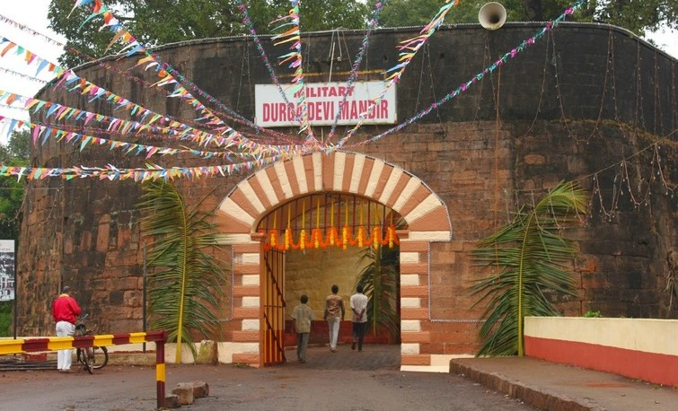
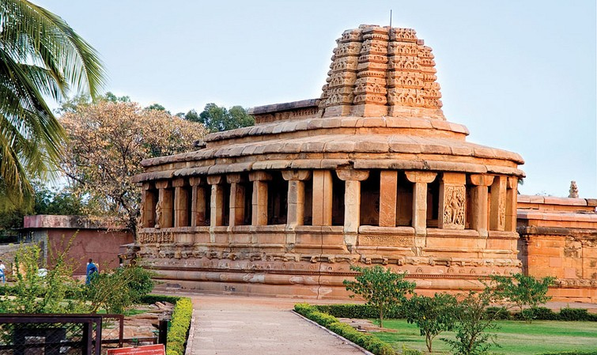
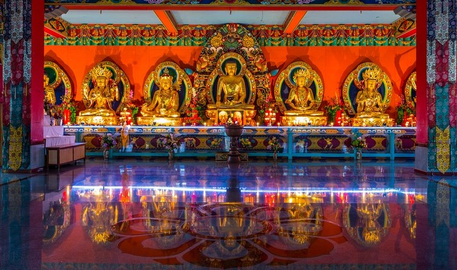

Karnataka has the second highest number of nationally protected monuments in India, in addition to 752 monuments protected by the State Directorate of Archaeology and Museums and another 25,000 monuments are yet to receive protection. This clearly tells that Karnataka is the right place for all you history buffs to satiate your wanderlust in India. However, we understand how difficult it can be to pick few destinations from 25000+ monuments worth seeing in the state. Therefore, we thought of lending a hand of help while using the other to create a list of famous historical places in Karnataka. This list would help you discover ancient places, monuments in the heart of urban cities and some important reminiscence of rich past of the state by being your heritage travel guide. So without further ado, here are our top 15 must visit historical places and monuments in Karnataka.
The Belgaum Fort is the main landmark of historic city of Belgaum and hold important place as heritage site in Karnataka that reflects the history of the city. At the entrance of the fort, there are two shrines, Ganapati and Durga. There are two Jinalayas done in the later Chalukya style dating around 1204 AD. Out of the two temple, one lies in ruin. It is believed that there were once 108 Jain Temples and 101 Shiva Temples in the premises of the fort. Even today, we can find stones belonging to some of these structures. Apart from the Jain and Shiva temples, there are two mosques, namely Jamia Masjid and Safa Masjid, which are also situated inside the fort. These mosques are built in Mughal and Deccani styles and have minars, domes and arches. Outside the mosque, to the right is an underground passage believed to lead to Yellurgad.
Situated on the southern bank of River Tungabhadra, Hampi is monument city that is gradually becoming a popular tourist destination in North Karnataka and boasts once being the seat of Vijayanagara Empire. The city is said to have established between AD 1336 – 1570. The major construction is reckoned to have been done during the reigning period of Raja Krishnadeva Raya, the most important ruler of the dynasty. Today, although Hampi lies in ruins but is still an epitome of rich architecture and reflection of passion for constructing massive structures. Amongst the restored edifices in Hampi is the Virupaksha Temple. Spread in 25 sq kms there are a plethora of rock cut structures seeing which you will get awe struck.
In the heart of the Bidar town is situated Chaubara, an ancient clock tower. Chaubara literally means a building that faces in four different directions, and thus one can see the situated on crossroads in the town of Bidar. The tower is said to have been constructed in pre-Islamic period but strangely follows semi- Islamic architecture. It has a circular base and is built of black trap masonry with a large clock placed on the top, which can be reached by a meandering flight of eighty stairs .The clock tower is built as an observation point and measures 71 feet in height. This cylindrical structure offers incredible view of the entire city from the top

Located on the edge of Bidar plateau, Bidar Fort is an important historical monument in Karnataka. Built by Adil Shah done in red laterite stone around the old fort in 1428 by Ahmed Shah Bahmani. Bidar fort has numerous monuments within its complex, amongst the most prominent are the Rangin Mahal or Painted Palace; the Takht Mahal, or throne room; the Jami Masjid or Great Mosque and the Sola Khamba Masjid or the Sixteen-Pillar mosque. One of the unusual features of the fort is the historic water supply system, called karez. It basically consisted of a network of underground canals that is fixed with vertical shafts to the surface. The ‘karez’ helped in transporting it through the underground tunnels to the houses of the people for various uses like drinking, washing, watering livestock, and a irrigating fields etc.

The Gol Gumbaz is yet another important heritage and monument to see in Karnataka. The monument is said to be the last resting place of Muhammad Adil Shah (AD 1626-56), the seventh ruler of the Adil Shahi dynasty. It is also reckoned to be the landmark of Bijapur. The Gol Gumbaz is an excellent example of Islamic architecture to be seen in the Deccan region in particular. The monument is replete with the trademark elements of the traditional Islamic or Persian style of architecture and the most noticeable feature of it is the central dome. The monument flaunts its massive cube, octagonal seven-storied towers, arches on the sides, decorative paneling, pillars and a crescent finial surmounting the spires.
BGommateshvara-Bahubali-in-Shravanabelagola.jpg" alt="image not found" width="100%" height="100%">uilt by the Ganga dynasty minister and commander, Chavundaraya, the statue of Bahubali is amongst the must see in Karnataka. It is a 57-foot tall statue that is situated above a hill in Shravanabelagola, in the Hassan district of Karnataka. This massive statue was built in around 981 and is also one of the largest free-standing statues in the world.The presence of this colossal statue makes Shravanabelagola an important Jain pilgrimage in Karnataka.

Bangalore Palace was built in the year 1944 by Wodeyar dynasty and is adorned with magnificent woodcarvings and Tudor-style architecture. It is in fact one of the finest modern day monument that must be visited in Karnataka. The palace has an architecture that is quite similar to castles built in Normandy and England. Although the palace has apparaently lost much of its original work but it still manages to attract tourists. One can still behold the fortified towers, gothic windows, battlements and turrets.The inner walls of the Bangalore Palace are also festooned with paintings belonging to the mid-19th century. The other attractions of the palace include a dining table of the Diwan of Mysore, Sir Mirza Ismail.

Built by the Hoysala Rulers, Chennakeshavasvami Temple is a magnificent shrine dedicated to lord Vijayanarayana, one of the twenty four incarnations of Vishnu. The temple was built to commemorates the victory of Hoysalas over Cholas in the great battle of Talakkad. Though some believe that it was constructed when Vishnuvardhana adopted Vaishnavism under the influence of the great guru Sri Ramanujacharya. The construction of the temple began in 1116 AD and according to historical records, it took about 103 years to complete this masterpiece. The temple complex is enclosed by high walls has a garbha griha (sanctum sanctorum), a sukhanasi (vestibule) and a navaranga mandapa. The complex also has many smaller shrines, mandapams and other structures. It is a beautiful temple and is one of the most important ancient monuments to see in Karnataka.
Halasuru Someshwara Temple is located in the outskirt of Halasuru also called Ulsoor in Bangalore. This Hindu place of worship is the oldest temple in Bangalore and dates back to the Chola period and believed to be some 1000 years old. Dedicated to the Hindu God Shiva, Someshvara was renovated during the late Vijayanagara Empire period under the rule of Hiriya Kempe Gowda II. There are numerous notable sculptures and other decorative pieces in the complex like an pillar or nandi, a tower which is sculptured with images Hindu pantheon. There is also an open ‘mantapa’ that consists 48 carved pillars. Other noteworthy art in the include sculptures of Ravana lifting Mount Kailash; Goddess Durga killing Mahishasura; a few images of the Nayanmar or Tamil saints and scenes from the wedding of Goddess Parvati to the Lord Shiva and the lore of the seven Hindu sages.
Located in Bidar, Narsimha is a Cave Temple and is one of the major tourist attractions in Karnataka. The temple is excavated in a 300 m tunnel under the Manichoola hill range situated at around 1 km from the city of Bidar. The famous cave temple enshrines the deity Lord Narasimha on the wall at the end of a cave, which is truly an architectural wonder. It is believed that the shrine at Narasimha Jharni Cave Temple is a swayambu or self manifested sculpture. A perennial stream of water is said to be flowing continuously for hundreds of years in this place making it quite a significant place in Karnataka to visit.

Raja’s tomb also known as Gaddige is located in one of the beautiful holiday places of Karnataka, Madikeri, Coorg. The monument depicts a significant Indo- Saracenic style of architecture and houses the mortal remains of the royal Kodavas. Though the structure has Islamic style of architecture, one can see that there are figures of Nandi carved on top of the corners. Lord Shiva can be seen worshipped inside the tomb, since the king belonged to the Hindu faith. This is one features that makes this tomb different from the others. Also, closer to the tombs is the burial ground for the two brave royal officials, namely, Biddanda Bopu and his son Biddanda Somaiah who are said to have sacrificed their life fighting with Tipu Sultan.
The official residence and seat of the Wodeyars, Mysore Palace is certainly one of the most famous places to see in Karnataka. Done in Indo- Saracenic with a tinge of Hindu, Islamic and Gothic architecture style, it is a three-story stone structure with marble domes and a 145 ft five-story tower. The palace is surrounded by a large garden.There are three major exclusive temple buildings within the Old Fort and about 18 inside the palace heart building that faces the Chamundi Hills. Mysore Palace is one of the finest tourism places in Karnataka, and thus is unmissable.

Keeping the rich history of Karnataka alive, the group of monuments in Pattadakal are ideal for heritage tourism in the state. These monuments represent high point of an eclectic art which in the 7th and 8th centuries under the Chalukya dynasty, achieved architectural forms. At Pattadakal one can go for sightseeing of imposing nine Hindu temples, as well as a Jain shrine. One masterpiece from the group that stands out is the Temple of Virupaksha, built around 740 AD by Queen Lokamahadevi to remember her husband’s victory over the kings of the South. Each temple here offers a delight witnessing experience with carvings, sculptures and shape making it an extraordinary place that should not be missed if your are history buff.
Built between the 7th and the 8th century by the dynasty of the Chalukyas, Durga Temple in Aihole is yet another religious places that adds charm to Karnataka tourism and is worth seeing by people irrespective of any faith. The architecture is amazing and is done predominantly in Dravida with Nagara style. The temple is dedicated to either Vishnu or Shiva. The shape of the temple, in Indian traditional architecture, is known as Gajaprasta which translates to the resemblance to the back of an elephant. The most original feature and the tourist attraction of the Durga Temple is a peristyle delimiting an ambulatory on the periphery of the temple itself whose walls are covered with sculptures of different gods or goddesses.
The Namdroling Nyingmapa Monastery, which is also known as the Thegchog Namdrol Shedrub Dargye Ling is said to be the largest teaching center of the Nyingma lineage of Tibetan Buddhism in the world. This prestigious monastery is located in Bylakuppe, which is in Mysuru district and is home to a sangha community that has more thanfive thousand Buddhist monks and nuns; a religious college (or shedra) and a hospital. The monastery was built by the 11th ruler of the Palyul lineage named Drubwang Padma Norbu Rinpoche in the year 1963 and ever since has been an important seat for Buddhism in India. Visiting Namdroling is probably one of the best things to do in Karnataka heritage tour. Our advice would be to not only bank on this list but trust your wanderlust instincts and go beyond lists and maps in Karnataka. This blog is just a way to take you one step closer to this historically affluent and utterly modern state, rest is indeed in your hands. If you liked what we wrote, please make sure to give us a LIKE and SHARE. You can also contact us for planning a holiday in Karnataka or anywhere across India.